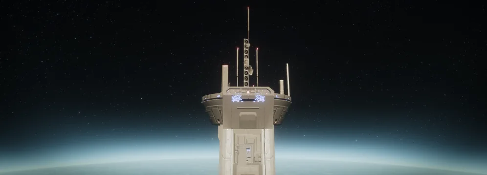
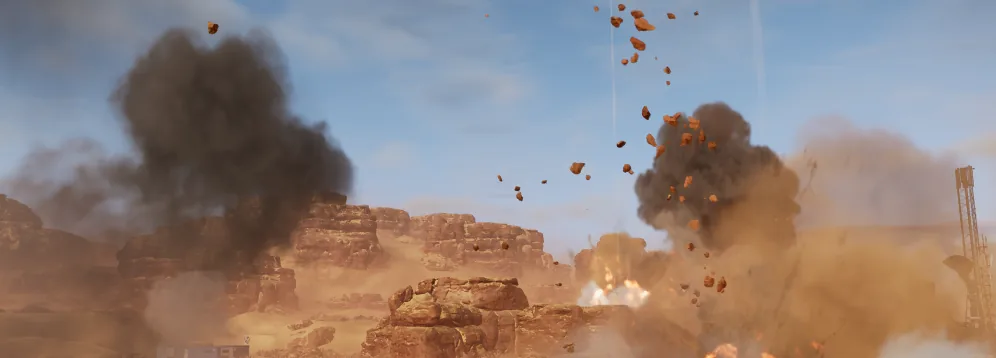

效果
效果 are certain conditions and modifiers that impact 玩法 in various ways. These 效果 are viewable on the 银河地图. The number of 效果 and 类型 vary by 生物群系, 阵营, and 难度.
武器实验/军械扩充
偶尔, 超级地球 High 指挥 makes certain 战略配备 available for 绝地潜兵 to deploy with as an additional 任务 标准-issue 战略配备. These augmentations are purely additive and do not take up a slot on a 绝地潜兵's 战略配备 武装配置.
民主空间站
The Democracy Space 车站 can provide a 绝地潜兵-funded "Tactical Action" in addition to the 解放 Campaign boosting "Operational 支援" to whichever 行星 is being orbited.

| 费用: | |
|---|---|
| 持续时间: | 24 hours |
| 冷却: | 4 days |
- The Eagle Storm won't activate / begin when a 绝地潜兵 is inside a 主体 or Optional/Secondary 目标 zones. This does not mean the enemy units within the 目标 zones are exempt from the DSS 鹰式打击 索敌.
- The Eagle Storm will 继续 until end even if a 绝地潜兵 steps into an 目标 zone.
- The 冷却 timer won't stop while a 绝地潜兵 is inside an 目标 area. And an Eagle Storm is launched instantly once 否 绝地潜兵 reside within a 目标 zone.
- The 索敌 射程 is a 200 meter radius from the covered 绝地潜兵. If 否 non-SEAF targets are available, the Eagle Strafing Runs are unloaded onto random areas near the edges of its 射程.
- The DSS's actions page incorrectly states that it deploys Eagle Airstrikes, but the "效果" 章节 on a 行星 affected by Eagle Storm correctly states that the DSS deploys Eagle Strafing Runs.
- 防御 Campaigns under the 效果 of Eagle Storm will have their timer paused for as long as the Eagle Storm 遗骸 over the 行星.

| 费用: |  4,320,000,000 4,320,000,000 |
|---|---|
| 持续时间: | 24 hours |
| 冷却: | 2 days |
- The 轨道武器 Blockade cannot end a 防御 Campaign already in progress.

| 费用: | |
|---|---|
| 持续时间: | 24 hours |
| 冷却: | 5 days |
- Despite its 描述 stating it accelerates progress on 解放 Campaigns, it also accelerates 绝地潜兵 efforts in 防御 and 入侵 Campaigns.
- Despite marked as a "武器 Experimentaion" in the "效果" 章节, this is in actuality an additional 轨道武器 380mm HE 弹幕 calldown. When used, the 绝地潜兵 first expends their selected 380mm rather than the DSS's.
- This additional 380mm 弹幕 won't have the 舰船升级 applied until it has been used the first time in a 任务; the 冷却 reductions are applied as soon as used.
- Has replaced 行星 Bombardment since 1月 16th 2025.
- Despite its 描述 stating it accelerates progress on 解放 Campaigns, it also accelerates 绝地潜兵 efforts in 防御 and 入侵 Campaigns.
- The 外骨骼机甲 冷却 reduction 效果 was added with the conclusion of 重要指令 A2-4-1.
环境条件
Environmental conditions 请参阅 geophysical events that influence a 行星's 环境, experienced throughout missions.
 酸雨风暴 – 腐蚀 酸雨风暴 temporarily reduce 护甲 effectiveness for both enemy and friendly units.
酸雨风暴 – 腐蚀 酸雨风暴 temporarily reduce 护甲 effectiveness for both enemy and friendly units. 暴风雪 – Intense 暴风雪 reduce mobility and moderately reduce visibility for both enemy and friendly units.
暴风雪 – Intense 暴风雪 reduce mobility and moderately reduce visibility for both enemy and friendly units. 极寒 – Periods of 冰冻 temperatures reduce 射速 and delay heat buildup in 武器.
极寒 – Periods of 冰冻 temperatures reduce 射速 and delay heat buildup in 武器. 烈焰龙卷 – 行星 is ravaged by deadly 烈焰龙卷.
烈焰龙卷 – 行星 is ravaged by deadly 烈焰龙卷. 极暑 – Periods of high temperatures 增加 耐力 drain and 速度 up heat buildup in 武器.
极暑 – Periods of high temperatures 增加 耐力 drain and 速度 up heat buildup in 武器. 离子风暴 – 离子风暴 intermittently disable 战略配备.
离子风暴 – 离子风暴 intermittently disable 战略配备. 流星风暴 – Meteors impact the 浮出地面 causing 庞大 伤害.
流星风暴 – Meteors impact the 浮出地面 causing 庞大 伤害. 暴雨 – Torrential 暴雨 reduce visibility.
暴雨 – Torrential 暴雨 reduce visibility. 沙暴 – Dense 沙暴 reduce mobility and greatly reduce visibility for both enemy and friendly units.
沙暴 – Dense 沙暴 reduce mobility and greatly reduce visibility for both enemy and friendly units. Thick Fog – Dense fog lightly 降低 visibility for both enemy and friendly units.
Thick Fog – Dense fog lightly 降低 visibility for both enemy and friendly units. 地震 – Frequent 地震 stun 玩家 and 敌人 alike.
地震 – Frequent 地震 stun 玩家 and 敌人 alike. 火山活动 – Volcanos throw 燃烧 rocks around this 行星.
火山活动 – Volcanos throw 燃烧 rocks around this 行星. 重型 Gloom Shroud This 行星 is completely engulfed by the Gloom, severely impeding logistical 支援. 撤离 times are 已增加 by 40 秒, Eagle Re-arm time is 已增加 by 30% and 弹药 from pickups is 已降低 by 50%.
重型 Gloom Shroud This 行星 is completely engulfed by the Gloom, severely impeding logistical 支援. 撤离 times are 已增加 by 40 秒, Eagle Re-arm time is 已增加 by 30% and 弹药 from pickups is 已降低 by 50%.- 中等 Gloom Blanket: The Gloom covers this 行星 completely, obstructing a variety of logistical operations. 撤离 times are 已增加 by 30 秒 and Eagle Re-arm time is 已增加 by 20%.
- 轻型 Gloom Cover: Gloom particles interfere with landing Pelicans, increasing 撤离 times by 20 秒.
- Gloom 来源: This 行星 continually produces a thick atmospheric Gloom cover, rendering logistical 支援 极其 挑战. Total 增援 are 已降低 by 20%, Eagle Re-arm time is 已增加 by 30%, and 弹药 from pickups is 已降低 by 50%.
作战效果
有时，在某些活动或重要指令期间，部分甚至全部行星可能会获得一个额外效果/修正器，适用于所有难度。
- 轨道武器 Fluctuations: All 轨道武器 战略配备 have an 已增加 冷却. (not to be confused with the 操作 修正 with the same name, this 效果 only affects 轨道武器 战略配备)
- Medical Supply Strain: Number of stims each 绝地潜兵 deploys with 已减少 by 1.
- Pilot Shortage: 撤离 takes 30 additional 秒.
- Slower 重新武装“飞鹰”: 重新武装“飞鹰” time is 25% slower.
行动限制条件
操作 Modifiers are added 障碍 that 绝地潜兵 must handle on the battlefield. A single 修正 will appear on  困难, increasing to two at
困难, increasing to two at  不可能. 操作 Modifiers do not appear on planets undergoing a 防御 Campaign.
不可能. 操作 Modifiers do not appear on planets undergoing a 防御 Campaign.
将军
- 复杂 战略配备 Plotting – 战略配备 呼叫时间 已增加 by 50%.
- 轨道武器 Fluctuations – 战略配备 冷却 已增加 by 25%.
- Poor Intel – 目标 locations are hidden.
- Civilians and SEAF in Area - SEAF 战士 squads and Civilians are both on the battlefield. (Event 修正 only present in Metropolis Biomes)
阵营专属
- Atmospheric Spores – Map obscured by Bug Spores.
- 漫游尖啸虫 - Flying 尖啸虫 swarms traverse the battlefield.
- 炮舰巡逻队 - Flying Gunships patrol the battlefield.
 The 光能者
The 光能者
- 利维坦封锁屏障 - Flying Leviathan warships patrol the battlefield.
已移除
- 对空防御 – 战略配备 slots 已降低 by 1.
- Atmospheric Interference – 轨道武器 战略配备 Scatter 已增加.
- 电子对抗措施 – 战略配备 Codes Scrambled.
作战部队
一些行星或城市会有影响生成单位类型的修正器，无论是友方单位还是敌方单位，它们可能提高特定单位的出现频率、用独特变体替换某些单位，或拥有完全独特的单位。
- 亚阵营：
- 捕食者 Strain - Unique cunning 变体 of 追猎虫 and Stalkers will appear.
- 破裂 Strain - Unique 钻地中 变体 of 武斗虫, 喷吐者 and Chargers will appear.
- Spore Burst Strain - Unique 爆炸 变体 of Scavengers, Hunters and 武斗虫 will appear.
- Dragonroaches - Bile Titans will be replaced with a unique flying enemy; the Dragonroach.
- Hive Lords - The colossal worm-like 霸王虫 will appear. (Requires
 自杀任务 or above.)
自杀任务 or above.)
- 亚阵营：
- Jet Brigade - Unique 特攻 Raider units will appear alongside 喷气背包-equipped 变体 of Troopers, MG Raiders, Commissars, Devastators, Hulk Scorchers and Hulk Bruisers.
- Incineration Corps - Unique Conflagration 蹂躏者 and Hulk Firebomber units will appear alongside 燃烧弹-wielding 变体 of Troopers, Rocket Raiders and 重型 Devastators.
- 生化人 - Unique cyborg Agitator, Radical and Vox Engine units will appear.
- 敌方师团：
- Hulk Surge - Hulk units will spawn with 已增加 频率.
- 重型护甲 Surge - Tanks and Striders will spawn with 已增加 频率.
- 蹂躏者 Surge - 蹂躏者 units will spawn with 已增加 频率.
 The 光能者
The 光能者
- 亚阵营：
- Appropriators - Unique Obtruder, Veracitor, and Gatekeeper units will appear.
- Vote Snatchers - Unique Wretch and Crusher units will appear
- 敌方师团：
 联邦 of 超级地球
联邦 of 超级地球
- 师团：
- 重型 SEAF Presence - SEAF Soldiers will be deployed into 任务 areas via 鹈鹕 Shuttles.
其他效果
护甲被动
护甲 Passives are unique, player-specific abilities or enhancements that are tied to their corresponding body armors. Depending on the perk, different 属性(s) will be affected, altering the way 绝地潜兵 can operate in the 任务.
增益
Each 绝地潜兵 has the option to equip a 强化资源 before deployment, which 施加 buff to the entire squad. Depending on the 强化资源, it can alter a 绝地潜兵's 属性, certain pieces of 装备, or 任务 机制.
物理条件
物理 Conditions 请参阅 adverse 效果 that a 绝地潜兵 may 经验值 on the battlefield. These conditions can 射程 from minor debuffs to being 致命 if left untreated. Depending on the 条件, it can be self-inflicted, caused by the 环境, or applied by an enemy 攻击.